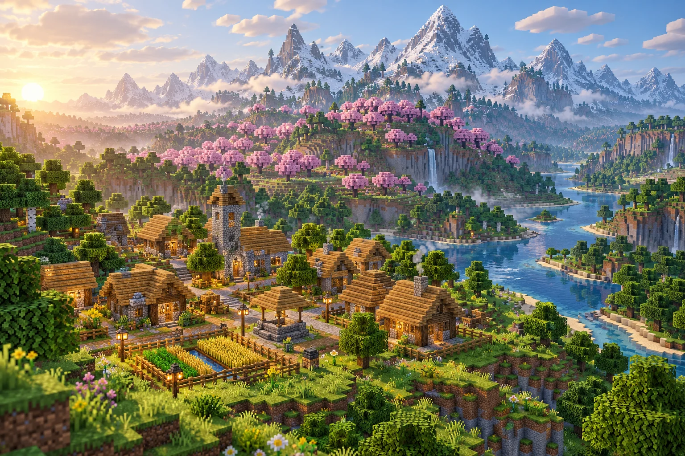
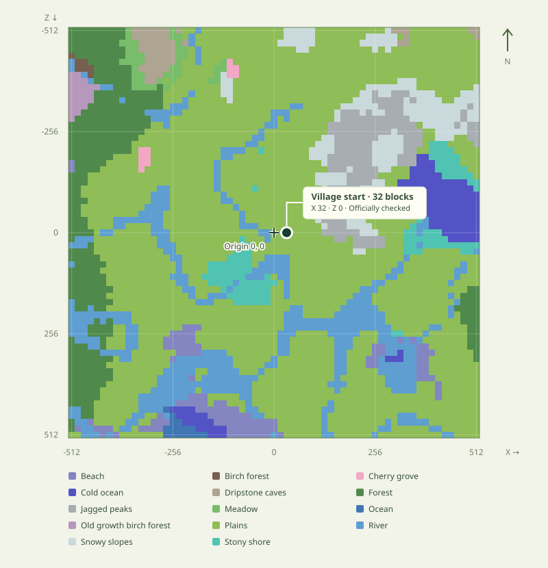
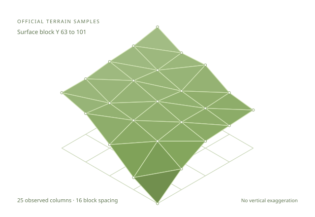

01 /
Describe your world
Tell your AI client which biomes and structures matter. Set the must haves, then add preferences.
“Plains here. A village close by.”A village beside cherry blossoms. Mountains on the horizon. Describe your Minecraft world, and find a real seed to make it happen.

JAVA EDITION 1.21.1 / 1.21.3
“A village near a cherry grove,
with mountains nearby.”
FROM “WHAT IF” TO WORLD SEED
Keep the exploration. Skip the endless world creation screen. DreamSeed gives your search a direction.
Tell your AI client which biomes and structures matter. Set the must haves, then add preferences.
“Plains here. A village close by.”The native engine checks Minecraft generation rules, combines your constraints, and ranks matches.
Your budget. Your CPU. Your results.Ask the optional official Minecraft verifier to confirm the selected biomes, structure starts, and distances.
See the evidence behind the result.A FEW PLACES TO START
Copy a prompt into your connected AI client. Make it your own, then refine the search as you go.
Use DreamSeed to find three Java 1.21.3 seeds with a village within 750 blocks of the origin and a cherry grove within 1024 blocks at Y 96. Require a village and cherry grove pair within 500 blocks. Prefer the closest pair of features to the origin. Use sampled strategy, sample seed 20261020, 100000 candidates, 60 seconds, and 4 workers. Show coordinates, distances, coverage, and validation status.
Use DreamSeed to find three Java 1.21.3 seeds with a village and a pillager outpost within 2000 blocks of the origin. Require a valid pair within 750 blocks of each other. Prefer both structures closer to the origin. Use sampled strategy, sample seed 20261020, 100000 candidates, 60 seconds, and 4 workers. Return the measured pair distance and validation status.
Use DreamSeed to find three Java 1.21.3 seeds with a cherry grove within 1024 blocks of the origin at Y 96 and jagged peaks within 1024 blocks at Y 128. Use sample step 32 and prefer both biomes closer to the origin. Use sampled strategy, sample seed 20261020, 100000 candidates, 60 seconds, and 4 workers. Explain sampling limits. Do not claim a surrounding mountain range.
Your client should check capabilities first and monitor the job until it finishes. A search may find no match within its budget.
A REAL SEED. WITH RECEIPTS.
Plains at the origin. A village close enough to walk to. This Java 1.21.3 result was found by DreamSeed and checked with the official Minecraft server.
-3989987067671208281
Distances are relative to the world origin, not actual world spawn. Structure start confirmation covers saved start and piece data. It does not check every building block or guarantee a safe teleport.


OBSERVED HEIGHTS → SAMPLED SURFACEGO A LITTLE DEEPER
Inspect generated heightmaps, surface blocks, and water depth. Turn real observations into biome maps, SVG previews, and rotatable surface meshes in the local app.
Explore terrain tools
Shown: 25 official samples from seed
-7333811035076652275, Java 1.21.3. A sampled surface
is a preview. Terrain classifiers remain experimental.
View source samples ↗
YOUR NEXT ADVENTURE IS LOCAL
Build once, connect your favorite client, and start exploring. DreamSeed runs on macOS and Linux. No model API key is required by DreamSeed.
# From a terminal on your computer
git clone --branch v0.2.0 https://github.com/youhaveme9/dreamseed.git
cd dreamseed
make build
make venv
make doctorNeeds Python 3.11+, CMake 3.20+, Git, Make, and C/C++ compilers.
# Replace these with your absolute checkout paths
codex mcp add dreamseed \
--env "DREAMSEED_BINARY=/path/to/dreamseed/build/dreamseed" -- \
"/path/to/dreamseed/.venv/bin/dreamseed-mcp"
codex mcp listRestart the client after setup. Your AI client has its own access requirements.
# Replace these with your absolute checkout paths
claude mcp add dreamseed --scope user --transport stdio \
-e "DREAMSEED_BINARY=/path/to/dreamseed/build/dreamseed" -- \
"/path/to/dreamseed/.venv/bin/dreamseed-mcp"
claude mcp listOr load the repository as the Claude Code plugin described in the README.
# Search with the native engine
./build/dreamseed search \
--config examples/multi_constraint_search.json
# Or open the local browser app
.venv/bin/dreamseed-web --port 8765Open http://127.0.0.1:8765 after starting the browser app.
Java Edition 1.21.1 and 1.21.3. Each version uses explicitly selected generation rules. Bedrock and unlisted versions are unsupported.
No. The origin is X 0, Z 0. Minecraft can place the actual world spawn elsewhere. DreamSeed reports horizontal X/Z distances from the explicit reference point. Actual spawn constraints are unsupported.
On your computer. Your AI client translates the request, then the local native engine searches seeds. This GitHub Pages site introduces the project; install DreamSeed to run searches. DreamSeed itself makes no model API calls.
It means no match was found within that search's time or candidate budget. Try a larger budget, a broader radius, or fewer mandatory conditions. A bounded search cannot prove that no matching seed exists.
It can measure supported biomes, structures, distances, and sampled terrain properties. Terrain classifiers are experimental. Scenic beauty and guaranteed valley or lake topology are not implemented.
Let’s find a place worth building in.
Find your next world